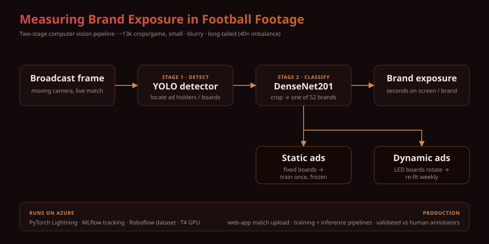

Measuring Brand Exposure in Football Footage with Computer Vision
We've been building a computer vision system that detects and classifies advertising holders in football footage — the perimeter boards, banners, and signage you see around a pitch — so we can measure how much exposure each brand actually gets during a match. It's a deceptively hard problem, and we wanted to share where it's landed.
The setup
The pipeline is a two-stage stack. A YOLO detector finds the advertising holders in each frame, and a DenseNet201 classifier then assigns each detected crop to one of 52 brand classes. The whole thing runs on PyTorch Lightning, with MLflow handling experiment tracking and Roboflow managing the dataset. Training happens on a single T4 GPU.

The data is the real challenge here. We're working with ~13k crops per game that are small, noisy, and frequently motion-blurred — exactly the kind of footage you'd expect from a moving broadcast camera tracking play. On top of that, the class distribution is brutally imbalanced: roughly 40× between the most and least represented classes. Some brands appear constantly, others only flash by a handful of times.
There's also a structural split in the ads themselves. Static ads stay fixed across matches — the same board, the same brand, week after week — so once the model learns them they're stable. Dynamic ads are the harder case: the LED boards rotate their content and the brands on them change every week. That means we can't treat them as a fixed set of classes. Dynamic ads need their own training pipeline that can be re-fit as new brands cycle in, rather than relying on a model trained once and frozen.
Choosing the models
We tested several options for both stages and ended up with the YOLO + DenseNet201 combination after weighing cost against benefit. It wasn't about picking the most modern architecture on paper — on our data (small, blurry, long-tailed crops) the more efficient candidates didn't justify their trade-offs, and this pairing gave us the best accuracy for the compute and complexity we were willing to take on.
How it runs in production
All the code lives on Azure. We have pipelines that manage both training and inference, so the heavy lifting is orchestrated rather than run by hand. On top of that there's a web application where a user can upload new football matches and trigger the work directly — kicking off training when it's needed (mainly for the dynamic ads that change week to week) or running inference to measure exposure.
To make sure the numbers actually mean something, we validated the system against exposure times measured by human annotators. Comparing the model's output to that ground truth is what gave us confidence the exposure figures are trustworthy.
What we'd change if we started over
A few things we'd approach differently with what we know now:
- Drop the holder-vs-creativity distinction. Splitting detection of the holders from the creatives on them added complexity we'd rather avoid. We'd experiment with models like SAM 3 to (1) cut annotation requirements as much as possible and (2) preprocess crops by segmenting just the holders before classification.
- Try unsupervised clustering. A clustering approach would be useful in the common case where we don't care about measuring every ad — only a handful of specific brands, for which we might have zero or very few labeled samples. That's hard to do well with a fixed supervised classifier, and clustering sidesteps the need for a full labeled class set.